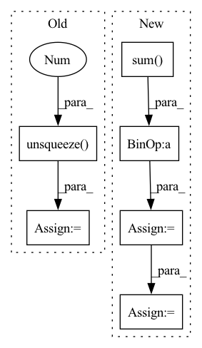

Pattern ID :28893

Before Change
self.samples += num_batches
for i in range(num_batches):
for j in range(num_labels):
intersection = (
(y_pred[i, j, :, :].unsqueeze(0) & y_true[i, j, :, :].unsqueeze(0))
.float()
.sum((1, 2))
)
After Change
correct = (y_pred_local == y_true_local).int().sum()
total = y_true_local.numel()
trues = y_pred_local.float().sum() + y_true_local.float().sum()
self.iou_per_class[j] += 1 if union == 0 else (intersection / union)
self.f1_score_per_class[j] += (
1 if trues == 0 else (2 * intersection / trues)
)
self.pixel_accuracy_per_class[j] += correct / total
In pattern: SUPERPATTERN
Frequency: 3
Non-data size: 6
Instances
Fragment ID: 84946832
Project Name: biasvariancelabs/aitlas
Commit Name: e11bf3d1eaac800ad330870791cd1f5e251967bd
Time: 2021-09-17
Author: ivan.kitanovski@gmail.com
File Name: aitlas/base/metrics.py
M Class Name: SegmentationRunningScore
N Class Name: SegmentationRunningScore
M Method Name: update(3)
N Method Name: update(3)
M Parent Class: RunningScore
N Parent Class: RunningScore
M File Name: aitlas/base/metrics.py
N File Name: aitlas/base/metrics.py
M Start Line: 248
M End Line: 260
N Start Line: 256
N End Line: 269
'>
Before Change
query_matrix.extend(self.memory_matrix[j * self.num_prototype:, :])
query_matrix = torch.stack(query_matrix, 0)
query_matrix = query_matrix.unsqueeze(0)
response = self.cmn(att_feats[i].unsqueeze(0), query_matrix, query_matrix)
responses.append(response.squeeze(0))
responses = torch.stack(responses, 0)
After Change
// Memory querying and responding for visual features
//dummy_memory_matrix = self.memory_matrix.unsqueeze(0).expand(att_feats.size(0), self.memory_matrix.size(0), self.memory_matrix.size(1))
max_num_protype = max((labels[:,-1]*3 + labels[:,:-1].sum(-1))) * self.num_prototype
query_matrix = self.memory_matrix.new_zeros(att_feats.size(0), max_num_protype, self.memory_matrix.shape[-1])
cmn_masks = self.memory_matrix.new_zeros(query_matrix.shape[0], att_feats.size(1), max_num_protype)
for i in range(att_feats.size(0)):
cur_query_matrix = []
//print(labels[i])
for j in range(len(labels[i])):
if labels[i, j] == 1:
if j != len(labels[i])-1:
cur_query_matrix.extend(self.memory_matrix[j*self.num_prototype:(j+1)*self.num_prototype, :])
else:
cur_query_matrix.extend(self.memory_matrix[j * self.num_prototype:, :])
cur_query_matrix = torch.stack(cur_query_matrix, 0)
//print("111",query_matrix[i, :cur_query_matrix.shape[0], :].shape, cur_query_matrix.shape)
query_matrix[i, :cur_query_matrix.shape[0], :] = cur_query_matrix
cmn_masks[i, :, :cur_query_matrix.shape[0]] = 1
responses = self.cmn(att_feats, query_matrix, query_matrix, cmn_masks)
//embeddings = embeddings + responses
att_feats = att_feats + responses
'>
Fragment ID: 84946837
Project Name: markin-wang/xpronet
Commit Name: f1eadeb44fcd3ca935352b9cc7d30eab0fa8c753
Time: 2021-11-21
Author: cserwj@gmail.com
File Name: modules/base_cmn.py
M Class Name: BaseCMN
N Class Name: BaseCMN
M Method Name: _prepare_feature_forward(5)
N Method Name: _prepare_feature_forward(5)
M Parent Class: AttModel
N Parent Class: AttModel
M File Name: modules/base_cmn.py
N File Name: modules/base_cmn.py
M Start Line: 402
M End Line: 451
N Start Line: 391
N End Line: 444
'>
Before Change
l1_loss = l1_loss + self.l1_criterion(after_outs, ys)
// make weighted mask and apply it
out_masks = make_non_pad_mask(olens).unsqueeze(-1).to(ys.device)
out_masks = torch.nn.functional.pad(out_masks.transpose(1, 2), [0, ys.size(1) - out_masks.size(1), 0, 0, 0, 0], value=False).transpose(1, 2)
out_weights = out_masks.float() / out_masks.sum(dim=1, keepdim=True).float()
out_weights /= ys.size(0) * ys.size(2)
// apply weight
l1_loss = l1_loss.mul(out_weights).masked_select(out_masks).sum()
After Change
out_weights = out_masks.float() / out_masks.sum(dim=1, keepdim=True).float()
out_weights /= gold_spectrograms.size(0) * gold_spectrograms.size(2)
duration_masks = make_non_pad_mask(text_lengths).to(gold_spectrograms.device)
duration_weights = (duration_masks.float() / duration_masks.sum(dim=1, keepdim=True).float())
// apply weight
l1_loss = l1_loss.mul(out_weights).masked_select(out_masks).sum()
duration_loss = (duration_loss.mul(duration_weights).masked_select(duration_masks).sum())
return l1_loss, duration_loss
'>
Fragment ID: 84946842
Project Name: digitalphonetics/ims-toucan
Commit Name: b8532b46fafdc2f07c5ce57d6b7711db0682be18
Time: 2023-03-09
Author: lux.florian@gmail.com
File Name: TrainingInterfaces/Text_to_Spectrogram/ToucanTTS/ToucanTTSLoss.py
M Class Name: ToucanTTSLoss
N Class Name: ToucanTTSLoss
M Method Name: forward(8)
N Method Name: forward(5)
M Parent Class: torch.nn.Module
N Parent Class: torch.nn.Module
M File Name: TrainingInterfaces/Text_to_Spectrogram/ToucanTTS/ToucanTTSLoss.py
N File Name: TrainingInterfaces/Text_to_Spectrogram/ToucanTTS/ToucanTTSLoss.py
M Start Line: 35
M End Line: 43
N Start Line: 19
N End Line: 53